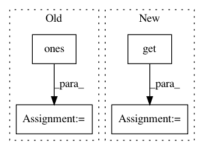

9d468d2c742491af2d2f506c648ddc95ffea6a64,src/sdk/pynni/nni/compression/tensorflow/builtin_pruners.py,SensitivityPruner,calc_mask,#SensitivityPruner#Any#Any#Any#,94
Before Change
def calc_mask(self, weight, config, op_name, **kwargs):
target_sparsity = config["sparsity"] * tf.math.reduce_std(weight)
mask = tf.get_variable(op_name + "_mask", initializer=tf.ones(weight.shape), trainable=False)
self.layer_mask[op_name] = mask
weight_assign_handler = tf.assign(weight, mask*weight)
// use control_dependencies so that weight_assign_handler will be executed before mask_update_handler
After Change
self.assign_handler = []
def calc_mask(self, weight, config, op_name, **kwargs):
start_epoch = config.get("start_epoch", 0)
freq = config.get("frequency", 1)
if self.now_epoch >= start_epoch and self.if_init_list.get(op_name, True) and (
self.now_epoch - start_epoch) % freq == 0:
target_sparsity = self.compute_target_sparsity(config)
In pattern: SUPERPATTERN
Frequency: 4
Non-data size: 4
Instances
Project Name: Microsoft/nni
Commit Name: 9d468d2c742491af2d2f506c648ddc95ffea6a64
Time: 2019-10-20
Author: lanny@mail.hfut.edu.cn
File Name: src/sdk/pynni/nni/compression/tensorflow/builtin_pruners.py
Class Name: SensitivityPruner
Method Name: calc_mask
Project Name: has2k1/plotnine
Commit Name: 58756c9467c5bce5e47ad1af8d7b3e634fa437b6
Time: 2020-12-15
Author: has2k1@gmail.com
File Name: plotnine/stats/stat_boxplot.py
Class Name: stat_boxplot
Method Name: compute_group
Project Name: keras-team/keras
Commit Name: a478930d25543f9f2de7cd76c3c051df08b78475
Time: 2015-08-18
Author: francois.chollet@gmail.com
File Name: keras/layers/advanced_activations.py
Class Name: ParametricSoftplus
Method Name: __init__
Project Name: automl/auto-sklearn
Commit Name: de074e29f36c33d5a8627f9e8ab92f1e0fd46d82
Time: 2014-12-15
Author: feurerm@informatik.uni-freiburg.de
File Name: AutoSklearn/implementations/OneHotEncoder.py
Class Name: OneHotEncoder
Method Name: _transform